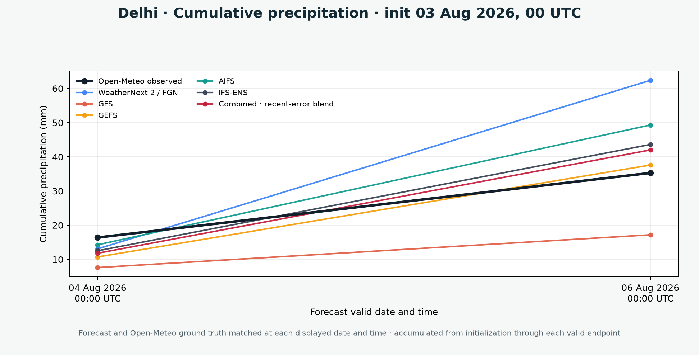

Model fields are reduced to a common India grid and consistent units.
India multi-model forecast
Weather forecasts and model comparisons
Five-day city forecasts, India-region maps, and matched validation against observations.
Loading…
Five-day outlook
Delhi
Inputs behind the city forecast
Contributing forecast grids
Select a forecast date above and a model below to inspect its loaded grid cells, values, weights, and exact validity times.
Exact native forecast times used
Forecast maps
India field explorer
Compare the recent-error blend, the simple grid-cell average, or any source model.
Loading map…
Temperature (°C) · fixed scale
0153045
Same 0–45 °C scale for every model, valid time, and temperature layer.Forecast evolution
Temperature · Combined · recent-error blend
Animated forecasts valid at 04 Aug 2026, 05:30 IST · 06 Aug 2026, 05:30 IST · 08 Aug 2026, 05:30 IST on a fixed 0–45 °C scale.
Open-Meteo observations
Forecast validation
Forecasts and observations are matched at the same city and valid time. Rainfall uses the same accumulation window.

One initialization at matched valid times
Compare each forecast directly with its observation at the displayed dates and times.

About the data
Method and sources
The site updates from the newest available 00 UTC initialization. Late models are added when they become available.
A causal search chooses equal weighting or recent-window exponential weighting separately for each variable and valid timestamp.
Open-Meteo temperature and rainfall are matched to the same forecast valid periods; historical blend predictions never use later observations.
| Model | Source | Members used | Reference |
|---|---|---|---|
| WeatherNext 2 / FGN | Google WeatherNext | 8 / 64 members | Documentation |
| GenCast | Google WeatherNext | 8 / 64 members | Documentation |
| GFS | dynamical.org / NOAA | Deterministic | Documentation |
| GEFS | dynamical.org / NOAA | 31 / 31 members | Documentation |
| AIFS | dynamical.org / ECMWF | Deterministic | Documentation |
| IFS-ENS | dynamical.org / ECMWF | 51 / 51 members | Documentation |
The simple-average map takes the arithmetic mean of all available source-model values independently at each grid cell. The recent-error blend instead pools recent errors across the four validation cities and applies timestamp- and variable-specific weights across the India grid. The online search follows exponentiated-gradient learning and sequential weather-forecast aggregation; exact candidates, selected weights, and prequential scores are in the combination metadata. Daily city rainfall is accumulated within each exact 24-hour period. Map rainfall is accumulated only since the previous displayed valid timestamp. This is a research product, not an official forecast or warning.